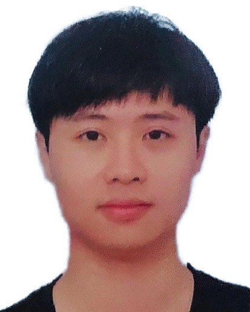

Name: Chen Pengyu
Gender: Male
Date of birth: April 1988
Hometown: Chaozhou, Guangdong
Mobile phone: 18319066421
Email: cpy4ever@gmail.com
Education: Master
Address: Guangdong Shenzhen South Science and Technology Park High School Four Sunshine Seaview
2007.09-2010 Undergraduate
Computer Science and Technology, South China University of Technology
2010.09-2013 Master
Software Engineering, South China University of Technology
As the main researcher of the laboratory research project, I participated in the research of the database skyline computing project and was responsible for algorithm design and implementation.
Work experience
Big Rock Capital 2021.12 - Today
Senior Backend Developer
- Transaction data cleaning and processing.
- Basic service construction.
Job project description:- Use Apache/Arrow to process and transform transaction data.
- Build and maintain basic services, including NFS data sharing disk, Docker mirroring, and k8s cluster.
Yanxin Technology 2020.01-2020
Senior Backend Developer ( Deep Learning Models )
- Maintain credit process identification service.
- Maintain credit process identification service.
- Responsible for the model information management platform.
Job project description:- Credit process identity recognition: OCR the identity certificate uploaded by the user, and fill in the recognized ID number and name on the APP registration page to optimize the user experience.
- Model indicator monitoring: Offline query Hive table (T + 1), obtain online chronicle data of the model, calculate the performance data of the model according to relevant formulas, send it to InfluxDB, and then display it in Grafana.
- Model information management platform: manages model metadata, as well as processes such as review and deployment.
Global 2018.06-2019
Senior Backend Development Engineer ( Big Data Platform )
- Responsible for demand mining, functional design and planning of the ES platform, coordinating resources, and promoting implementation
Have a certain understanding of the reading and writing process of ES, high availability strategies, and index storage principles.
- Participate in the data platform, sort out the functional requirements for the entire process of data collection, storage, cleaning, and report presentation, and promote implementation.
- Responsible for maintaining, filling out, and scripting the data warehouse of the Spark framework.
- Maintenance and deployment of Data Acquisition.
Job project description:- ES platform: Provides search function, serves as a unified platform for the company, supporting multiple business parties.
- Short URL system: The business party registers the website address to the short URL system, obtains the short URL connection, and makes it easier to plant advertisements, etc.
- Data Acquisition: Helps business parties collect data and report it to the monitoring system.
Honors/Certificates Work Experience
2010.03
South China University of Technology Jinghua Network Cup ACM Program Design Competition Third Prize
2011.05
The 9th Guangdong Province University Student Programming Competition
(GDCPC) Second Prize
2011.06
Alababa ACM-ICPC Campus Programming Elite Competition South China Region Star of the Day Second Prize (Finals) TopCoder Open Algorithm 2018, 2020, 2021 Advance to the third round and win the t-shirt
(Top 400)
Facebook Hacker Cup 2021, 2022 advanced to the second round and won the t-shirt (top 2000).
2008-2009 Third Prize Scholarship
2010-2011 First Prize Scholarship
Obtained the third prize in the high school entrance examination in Chaozhou City, Guangdong Province
Admitted to the ACM training team of the School of Computer Science in the third year and passed the English Level 6 exam (505).
Academic experience
Workshop
Attended NUS SoC Research Workshop in Suzhou 2013
Publication
Pengyu Chen, Jian Chen, Jin Huang, Multi-user location-dependent skyline query based on dominance graph in International Journal of Computational Science and Engineering, 2014.
Today Toutiao 2017.12-2018
Python backend development
- Maintain the service module responsible and continuously optimize the functional system.
- Docs server level development, mainly involving docs homepage browsing related services.
- APP version control system maintenance and business access, admin support version basic information and installation package management, api layer support client and download page download and update.
Job project description:- Online document (Feishu);
- APP version control system.
Futu Securities 2015.04-2017
Web site development
- Development of the operating system CMDB, including the development of Cloud as a Service automated application process, open source software
Automatic installation, etc.
- Maintain backup system Client and regularly backup data on business machines.
- Develop a distributed workflow engine to support the automated execution of business-defined dependent tasks.
Job project description:- Operation system CMDB;
- Backup system (MySQL, Redis);
- Distributed workflow engine (supporting scripting language).
Tencent Cloud 2013.04-2015
Python backend development
- Responsible for developing the core backend process of virtual machines, including important processes such as creation, restart, reinstallation, and destruction.
- Virtual machine acquisition agent development.
Job project description:- QCloud operation platform;
- Virtual machine exploration and monitoring of Data Acquisition (including status and calendar data).
Technology stack
Programming Language: Python/JavaScript/C/C++ Database: MySQL/Redis
Container Technology: docker/k8s Version Control Tool: git
Operating System: Linux/MacOS